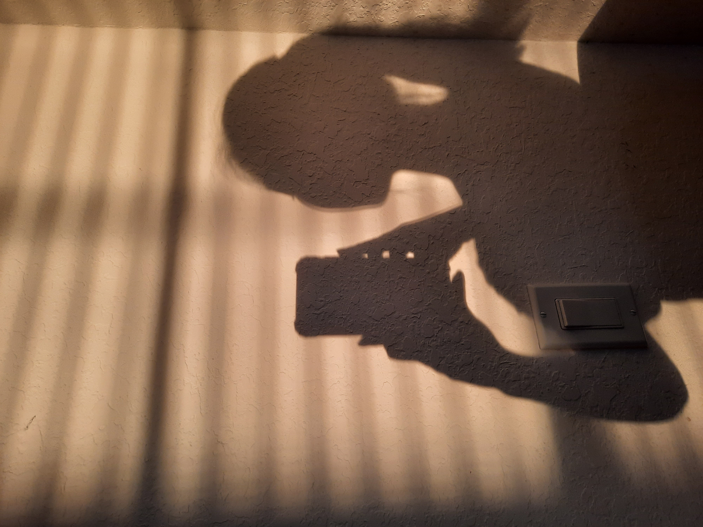
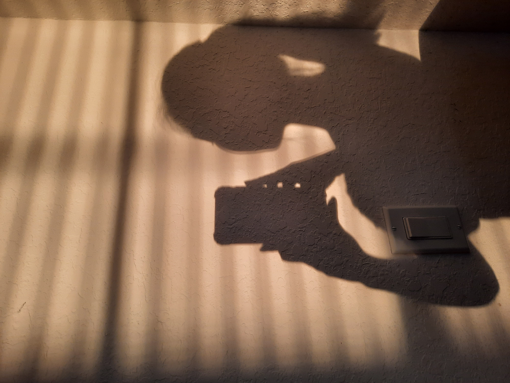

fact #1:
COMPUTER SCIENCE!!!
I LOVE computer science and learning new skills! I mostly do Python (competitive programming, data analysis, and machine learning), but nothing LIGHTS A FIRE IN MY SOUL like web development and frontend design!!!! I've made a lot of websites, but never actually *learned* webdev lol, so my knowledge is really spotty. I'm SUPER excited for this program!
I'm also trying to learn SQL rn to help with data collection in 5k runs (these are the machines that take in data from runners' chips as they cross the starting line!)
fact #2:
CREATIVITY!!!
I love writing and art and journaling of all kinds! Here is part of a zine I made!
I've also recently been obsessed with creative technology (a field I did NOT know existed until now) and really want to expand my skills in combining art and CS!
fact #3:
MISCELLANEOUS!!!
I like light fixtures, but the sun is pretty cool as well. I hate driving because I love the views I get to see as a passenger.

I'm also definitely a morning person, and I think sunrises are superior to sunsets!
 
